library(xml2)
library(httr)
library(tidyverse)
library(sf)
library(rnaturalearth)
library(scrapex)6 Case study: Scraping Spanish school locations from the web
In this chapter we’ll be scraping the location of a sample of schools in Spain. This case study involves using XPath to find the specific chunks of code that contain coordinates of schools in Spain, as well as inspecting the source code of a website in depth. The final result of this chapter is to generate a plot like this one without previous knowledge of where schools are:

As usual, the website has been saved locally in the scrapex package such that any changes made on the website don’t break our code in the future. Althought the links we’ll be working with will be hosted locally on your machine, the HTML of the website should be very similar to the one hosted on the online website (with the exception of some images/icons which were deleted on purpose to make the package lightweight). With that said, the local website should be a fairly good representation of what you’ll find in real website on the internet. The website is in Spanish so I’ll make sure to point out specifically the type of information we’re looking for. Non-spanish speakers should be able to work through this chapter without a problem.
Before we begin, let’s load all the package we’ll use in the chapter:
6.1 Building a scraper for one school
Visualizing school locations can be useful for many things such as matching population density of children across different regions to school locations or mapping patterns of inequality by geographical locations. The website www.buscocolegio.com contains a database of schools for all of Spain, containing a plethora of information of each school, together with the coordinates of where the school is located. The function spanish_schools_ex() contains the local links to each school.
Let’s look at an example for one school.
school_links <- spanish_schools_ex()
# Keep only the HTML file of one particular school.
school_url <- school_links[13]
school_url[1] "/home/thomas/.cache/R/renv/cache/v5/linux-endeavouros-2025.03.19/R-4.6/x86_64-pc-linux-gnu/scrapex/0.0.1.9999/9aa78cbb3eccaaa811756b4bf07fdd1a/scrapex/extdata/spanish_schools_ex/school_3006839.html"Let’s look at the rendered website with the code below:
browseURL(prep_browser(school_url))
The website shows standard details of the school “CEIP SANCHIS GUARNER”. You can see it’s contact email and other contact details. Additionally, you can see it’s location on the right. We want to extract precisely that data to visualize their locations. How can we access those coordinates?
Let’s read the website into R before we start narrowing down how to obtain the coordinates:
school_raw <- read_html(school_url) %>% xml_child()
school_raw{html_node}
<head>
[1] <title>Aquí encontrarás toda la información necesaria sobre CEIP SANCHIS ...
[2] <meta charset="UTF-8">\n
[3] <meta name="viewport" content="width=device-width, initial-scale=1, shri ...
[4] <meta http-equiv="x-ua-compatible" content="ie=edge">\n
[5] <meta name="author" content="BuscoColegio">\n
[6] <meta name="description" content="Encuentra toda la información necesari ...
[7] <meta name="keywords" content="opiniones SANCHIS GUARNER, contacto SANCH ...
[8] <link rel="shortcut icon" href="/favicon.ico">\n
[9] <link rel="stylesheet" href="//fonts.googleapis.com/css?family=Roboto+Sl ...
[10] <link rel="stylesheet" href="https://s3.eu-west-3.amazonaws.com/buscocol ...
[11] <link rel="stylesheet" href="/assets/vendor/icon-awesome/css/font-awesom ...
[12] <link rel="stylesheet" href="/assets/vendor/icon-line/css/simple-line-ic ...
[13] <link rel="stylesheet" href="/assets/vendor/icon-line-pro/style.css">\n
[14] <link rel="stylesheet" href="/assets/vendor/icon-hs/style.css">\n
[15] <link rel="stylesheet" href="https://s3.eu-west-3.amazonaws.com/buscocol ...
[16] <link rel="stylesheet" href="https://s3.eu-west-3.amazonaws.com/buscocol ...
[17] <link rel="stylesheet" href="https://s3.eu-west-3.amazonaws.com/buscocol ...
[18] <link rel="stylesheet" href="https://s3.eu-west-3.amazonaws.com/buscocol ...
[19] <link rel="stylesheet" href="https://s3.eu-west-3.amazonaws.com/buscocol ...
[20] <link rel="stylesheet" href="https://s3.eu-west-3.amazonaws.com/buscocol ...
...At this point, we shouldn’t worry about exploring the actual website in R. It’s always a better idea to look at the code on your browser. Once you have an idea of where the data you’re looking for is, you can come back to the raw HTML and search for the specific tags.
Web scraping strategies are very specific to the website you’re after. You have to get very familiar with the website you’re interested to be able to match perfectly the information you’re looking for. In many cases, scraping two websites will require vastly different strategies.
The first thing we want to do is to start looking at the source code of the maps section on the right so you can start looking for hints of the coordinates somewhere in the code. We do that by popping up the web developer’s tools. All browsers support this tool and you can open it if you press CTRL + SHIFT + c at the same time (Firefox and Chrome support this hotkey). You can also open it by searching the settings menu of your browser and looking for ‘Web Developer Tools’. If a window on the right popped in full of code then you’re on the right track:
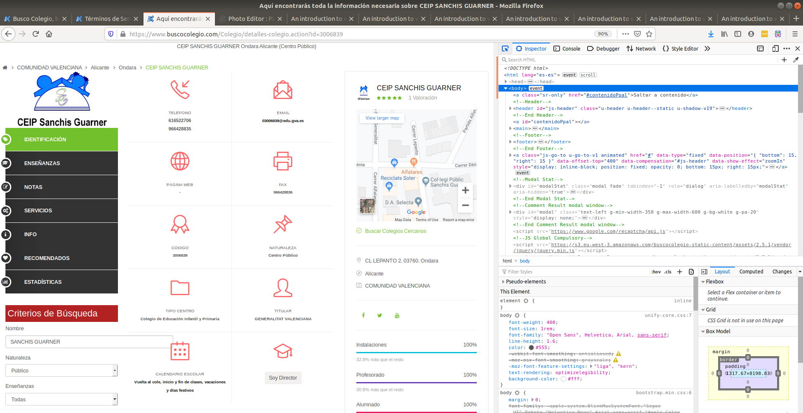
Here we can search the source code of the website. If you place your mouse pointer over the lines of code from this right-most window, you’ll see sections of the website being highlighted in blue. This indicates which parts of the code refer to which parts of the website. We never should search the complete source code to find what we want but rather approximate our search by typing the text we’re looking for in the search bar at the top of the right window.
My first intuition is to search for the text just below the Google Maps:

Searching for that text will be our best approximation because we’ll be just within the maps section of the code and we can start looking for coordinates there instead of the entire website. Let’s search for that in the search bar of developer tools:
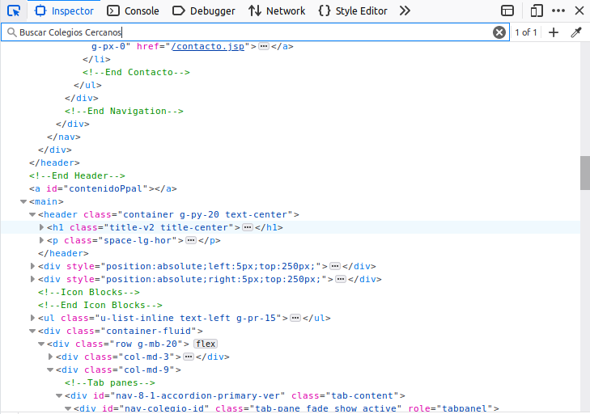
After we click enter, we’ll be automatically directed to the tag that has the information that we want.
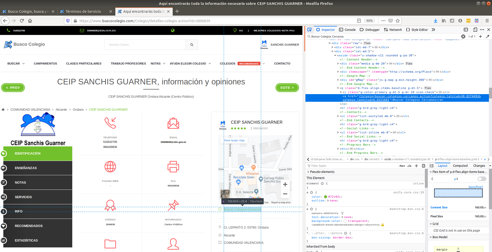
At this point, I started browsing the tags in this part of code. To our surprise, we actually landed specifically where the coordinates are. We can see that the latitude and longitude of schools are found in an attributed called href in an <a> tag:

Can you see the latitude and longitude fields in the text highlighted blue? It’s hidden in-between words. That is precisely the type of information we’re after. The href attribute of the <a> tag contains the coordinates.
Extracting all <a> tags from the website will yield hundreds of matches because <a> is a very common tag in HTML. Refining the search to <a> tags which have an href attribute will also yield hundreds of matches because href is the standard attribute to attach links within websites. We need to narrow down our search within the website.
One strategy is to find the ‘father’ or ‘grandfather’ node of this particular <a> tag and match it. The strategy is too look for an ascendant tag that has a particular property that is unique enough to narrow down the search. For example, if the father of the <a> tag would be only a <p> tag, then that would return dozens of results. By looking at the structure of this small HTML snippet from the right-most window, we see that the ‘father’ of this <a> tag is <p class="d-flex align-items-baseline g-mt-5'> which has a particularly long attribute named class. That seems like a good candidate to use:

The <p> tag is the father of both the <i> tag and the <a> tag we want to extract the coordinates from:
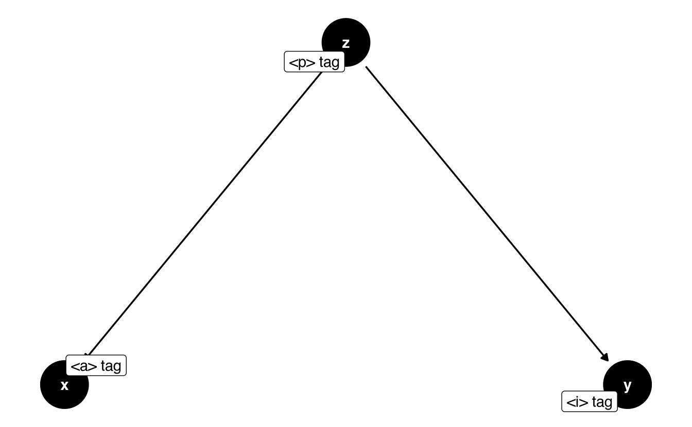
It’s important to not be intimidated by these tag names and long attributes. I also don’t know what any of these attributes mean. But what I do know is that this is the ‘father’ of the <a> tag I’m interested in. So using our XPath skills, let’s search for a <p> tag that has a class set to 'd-flex align-items-baseline g-mt-5' and see if we get only one match. That would mean that we can identify that tag precisely:
# Search for all <p> tags with that class in the document
school_raw %>%
xml_find_all("//p[@class='d-flex align-items-baseline g-mt-5']"){xml_nodeset (1)}
[1] <p class="d-flex align-items-baseline g-mt-5">\n\t <i ...Only one match, so this is good news. This means that we can uniquely identify this particular <p> tag. Let’s refine the search to say: Find all <a> tags which are children of that specific <p> tag. This only means I’ll add a "//a" to the previous expression. Since there is only one <p> tag with the class, we’re interested in checking whether there is more than one <a> tag below this <p> tag.
school_raw %>%
xml_find_all("//p[@class='d-flex align-items-baseline g-mt-5']//a"){xml_nodeset (1)}
[1] <a href="/Colegio/buscar-colegios-cercanos.action?colegio.latitud=38.8274 ...There we go! We can see the specific href that contains the latitude and longitude data we’re interested in. How do we extract the href attribute? xml_attr is the standard function to extract attributes out of tags:
location_str <-
school_raw %>%
xml_find_all("//p[@class='d-flex align-items-baseline g-mt-5']//a") %>%
xml_attr(attr = "href")
location_str[1] "/Colegio/buscar-colegios-cercanos.action?colegio.latitud=38.8274492&colegio.longitud=0.0221681"6.1.1 Data cleaning
Ok, now we need some regular expression skills to get only the latitude and longitude. In the string with the coordinates we see that the first coordinate appears after the first =. Moreover, aside from the coordinates, there’s a few words like colegio (this is just spanish for school) and longitud that are in the middle of the two coordinates. With this mind, we can write the regex:
"=.+$"which captures a=followed by any character (the.) repeated 1 or more times (+) until the end of the string ($). In layman terms: extract any text after the=until the end of the string.
Let’s apply that:
location <-
location_str %>%
str_extract_all("=.+$")
location[[1]]
[1] "=38.8274492&colegio.longitud=0.0221681"The result is exactly what we wanted. Now we need to replaced everything that is not the coordinates. A regex for that would look like:
"=|colegio\\.longitud"which matches the=orcolegio.longitud(remember that|stands for OR in regex). Why is the.preceded by two\\? As you saw in the previous regex that we used, the.in regular expressions means any character. To signal that we want this.to be matched literally we write it like\\.. In layman terms: match either=orcolegio.longitud. Let’s apply it:
location <-
location %>%
str_replace_all("=|colegio\\.longitud", "")
location[1] "38.8274492&0.0221681"There we go. We replaced everything between the coordinates except the & in between. Why didn’t we replace that? Because we’ll split the two coordinates by & and have them both separate:
location <-
location %>%
str_split("&") %>%
.[[1]]
location[1] "38.8274492" "0.0221681" Alright, so that’s the end of our data cleaning efforts. We managed to locate the specific HTML node that contained the school coordinates and extracted it using string manipulations. Now that we got that information for one single school, let’s turn that into a function so we can pass only the school’s link and get the coordinates back.
6.2 Scaling the scraper to all schools
When moving the code to scrape one single case to many cases, you’ll want to move the code into a function to make it more compact, organized and easy to read. Let’s move all our code into a function but also make sure to set your user agent as well add a time sleep of 5 seconds to the function (we’ll touch upon the reasons why adding a user-agent and a time sleep are important in chapter @ref(ethical-issues)) because we want to make sure we don’t cause any troubles to the website we’re scraping due to an overload of requests:
# This sets your `User-Agent` globally so that all requests are identified with this `User-Agent`
set_config(
user_agent("Mozilla/5.0 (X11; Ubuntu; Linux x86_64; rv:105.0) Gecko/20100101 Firefox/105.0")
)
# Collapse all of the code from above into one function called
# school grabber
school_grabber <- function(school_url) {
# We add a time sleep of 5 seconds to avoid
# sending too many quick requests to the website
Sys.sleep(5)
school_raw <- read_html(school_url) %>% xml_child()
location_str <-
school_raw %>%
xml_find_all("//p[@class='d-flex align-items-baseline g-mt-5']//a") %>%
xml_attr(attr = "href")
location <-
location_str %>%
str_extract_all("=.+$") %>%
str_replace_all("=|colegio\\.longitud", "") %>%
str_split("&") %>%
.[[1]]
# Turn into a data frame
data.frame(
latitude = location[1],
longitude = location[2],
stringsAsFactors = FALSE
)
}
school_grabber(school_url) latitude longitude
1 38.8274492 0.0221681We can see that it worked for a single school, so we can try on all schools. The only thing left is to extract this for many schools. As shown earlier, scrapex contains a list of 27 school links that we can automatically scrape. Let’s loop over those, get the information of coordinates for each and collapse all of them into a data frame.
coordinates <- map_dfr(school_links, school_grabber)
coordinates latitude longitude
1 42.72779 -8.6567935
2 43.24439 -8.8921645
3 38.95592 -1.2255769
4 39.18657 -1.6225903
5 40.38245 -3.6410388
6 40.22929 -3.1106322
7 40.43860 -3.6970366
8 40.33514 -3.5155669
9 40.50546 -3.3738441
10 40.63826 -3.4537107
11 40.38543 -3.6639500
12 37.76485 -1.5030467
13 38.82745 0.0221681
14 40.99434 -5.6224391
15 40.99434 -5.6224391
16 40.56037 -5.6703725
17 40.99434 -5.6224391
18 40.99434 -5.6224391
19 41.13593 0.9901905
20 41.26155 1.1670507
21 41.22851 0.5461471
22 41.14580 0.8199749
23 41.18341 0.5680564
24 42.07820 1.8203155
25 42.25245 1.8621546
26 41.73767 1.8383666
27 41.62345 2.0013628So now that we have the locations of these schools, let’s plot them:
coordinates <- mutate_all(coordinates, as.numeric)
sp_sf <-
ne_countries(scale = "large", country = "Spain", returnclass = "sf") %>%
st_transform(crs = 4326)
ggplot(sp_sf) +
geom_sf() +
geom_point(data = coordinates, aes(x = longitude, y = latitude)) +
coord_sf(xlim = c(-20, 10), ylim = c(25, 45)) +
theme_minimal() +
ggtitle("Sample of schools in Spain")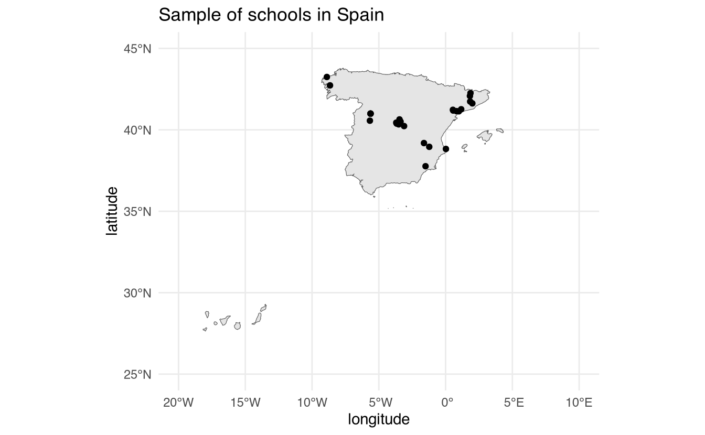
There’s it is! We managed to extract the coordinates of all the schools, clean them and plot them.
6.3 Scraping public/private school information
Suppose that working as a consultant for the ministry of economy, they task you with understanding whether public/private schools are correlated with income inequality at the neighborhood level. There’s many public sources nowadays that can tell you the average income for a given neighborhood so we can find that data already cleaned and ready to use for us on the internet. However, it’s difficult to find a list of all national schools of a country together with the information on whether they’re public or private.
As we saw in www.buscocolegio.com, each school website has also information on whether a school is public or private. It’s exactly here:
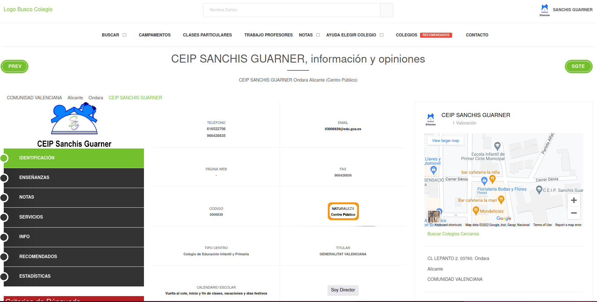
“Centro Público” means Public Center. If we managed to build a scraper to extract this information we would know if a school is either public or private. Let’s open up web developer tools and look specifically at the tag that is highlighted when clicking on “Centro Público”:

The public/private information we’re interested is within a <strong> tag. This tag in HTML means that the text will be in bold (althought we don’t care about what each tag does, it’s handy to know). Searching simply for a <strong> tag will probably yield dozens of matches since <strong> is too generic. We need to find a more unique tag that identifies the entire box. At this point, I started looking at the father tags above <strong> and found the 1st ascendant of the <strong> tag:
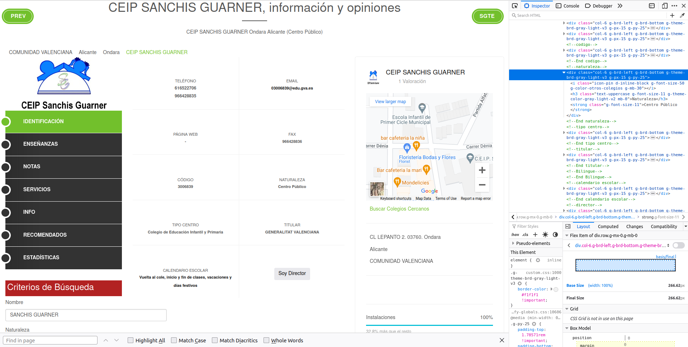
The <div> tag with class 'col-6 g-brd-left g-brd-bottom g-theme-brd-gray-light-v3 g-px-15 g-py-25' seems unique enough to give it a try. Let’s try:
school_raw %>%
xml_find_all("//div[@class='col-6 g-brd-left g-brd-bottom g-theme-brd-gray-light-v3 g-px-15 g-py-25']"){xml_nodeset (10)}
[1] <div class="col-6 g-brd-left g-brd-bottom g-theme-brd-gray-light-v3 g-px ...
[2] <div class="col-6 g-brd-left g-brd-bottom g-theme-brd-gray-light-v3 g-px ...
[3] <div class="col-6 g-brd-left g-brd-bottom g-theme-brd-gray-light-v3 g-px ...
[4] <div class="col-6 g-brd-left g-brd-bottom g-theme-brd-gray-light-v3 g-px ...
[5] <div class="col-6 g-brd-left g-brd-bottom g-theme-brd-gray-light-v3 g-px ...
[6] <div class="col-6 g-brd-left g-brd-bottom g-theme-brd-gray-light-v3 g-px ...
[7] <div class="col-6 g-brd-left g-brd-bottom g-theme-brd-gray-light-v3 g-px ...
[8] <div class="col-6 g-brd-left g-brd-bottom g-theme-brd-gray-light-v3 g-px ...
[9] <div class="col-6 g-brd-left g-brd-bottom g-theme-brd-gray-light-v3 g-px ...
[10] <div class="col-6 g-brd-left g-brd-bottom g-theme-brd-gray-light-v3 g-px ...Ok, this makes sense. It returns 10 nodes because this same <div> is present in all details of the bigger details box:
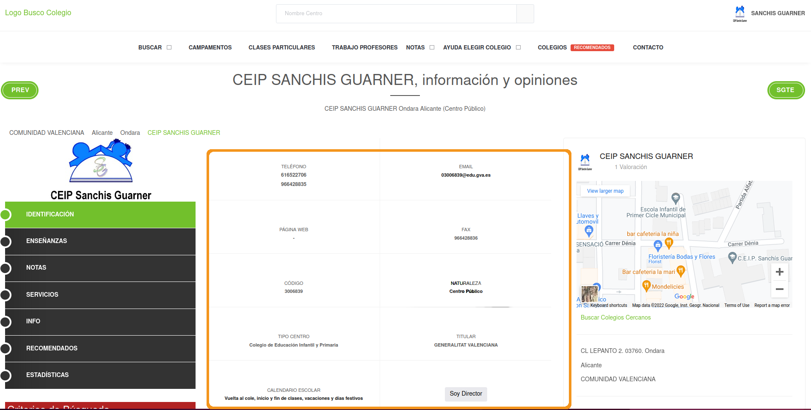
One strategy is to extract all <strong> tags within that tag and extract the text. If we find the “Centro Público” text in there, we can use some regex to extract it:
text_boxes <-
school_raw %>%
xml_find_all("//div[@class='col-6 g-brd-left g-brd-bottom g-theme-brd-gray-light-v3 g-px-15 g-py-25']//strong") %>%
xml_text()
text_boxes [1] "616522706"
[2] "966428835"
[3] "03006839@edu.gva.es"
[4] "-"
[5] "966428836"
[6] "3006839"
[7] "Centro Público"
[8] "Colegio de Educación Infantil y Primaria"
[9] "GENERALITAT VALENCIANA"
[10] "Vuelta al cole, inicio y fin de clases, vacaciones y días festivos"We can see the type of school right there in slot 7 of the vector. Let’s finalize this by detecting the string with a pattern and extracting it:
single_public_private <-
text_boxes %>%
str_detect("Centro") %>%
text_boxes[.]
single_public_private[1] "Centro Público"There we go. We have the scaffold code to build a function and extract this for all schools. Let’s move our code into a function that accepts one school url and loop over all schools:
grab_public_private_school <- function(school_link) {
Sys.sleep(5)
school <- read_html(school_link)
text_boxes <-
school %>%
xml_find_all("//div[@class='col-6 g-brd-left g-brd-bottom g-theme-brd-gray-light-v3 g-px-15 g-py-25']//strong") %>%
xml_text()
single_public_private <-
text_boxes %>%
str_detect("Centro") %>%
text_boxes[.]
data.frame(
public_private = single_public_private,
stringsAsFactors = FALSE
)
}
public_private_schools <- map_dfr(school_links, grab_public_private_school)
public_private_schools public_private
1 Centro Privado
2 Centro Público
3 Centro Público
4 Centro Público
5 Centro Privado
6 Centro Público
7 Centro Público
8 Centro Privado
9 Centro Público
10 Centro Público
11 Centro Público
12 Centro Público
13 Centro Público
14 Centro Público
15 Centro Público
16 Centro Público
17 Centro Público
18 Centro Privado
19 Centro Público
20 Centro Público
21 Centro Privado
22 Centro Público
23 Centro Privado
24 Centro Público
25 Centro Público
26 Centro Privado
27 Centro PúblicoWith this info at hand we can merge it with the coordinates of the school and visualize public/private schools by location:
# Let's translate the public/private names from Spanish to English
lookup <- c("Centro Público" = "Public", "Centro Privado" = "Private")
public_private_schools$public_private <- lookup[public_private_schools$public_private]
# Merge it with the coordinates data
all_schools <- cbind(coordinates, public_private_schools)
# Plot private/public by coordinates
ggplot(sp_sf) +
geom_sf() +
geom_point(data = all_schools, aes(x = longitude, y = latitude, color = public_private)) +
coord_sf(xlim = c(-20, 10), ylim = c(25, 45)) +
theme_minimal() +
ggtitle("Sample of schools in Spain by private/public")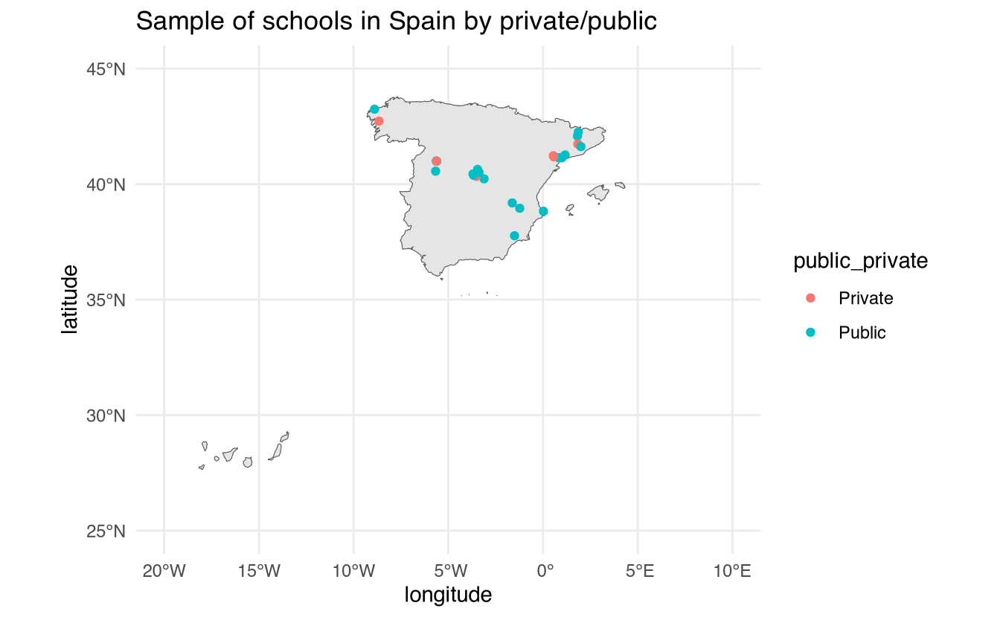
6.4 Extracting type of school
One additional information that might also be useful to know is the type of each school: kindergarten, secondary school, primary school, etc. This information is just next to whether the school is private or public:

Now, you might think we can just copy the exact code from the previous extraction but this one is slightly different. The problem is that we don’t know in advance what the type of school each school might be. That is, we can’t use regex to search (like we did for the public/private) for something like “Primary” because it can be “Primary school” or many other types of school. What we have to do here is to search for the header of the box:
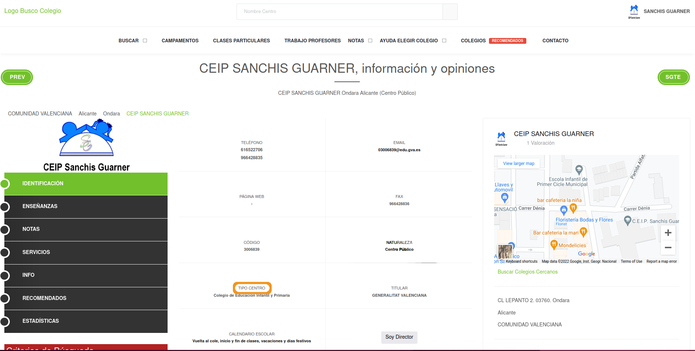
We recycle the first XPath from the public/private scraper and then find the exact <div> that belongs to the type of school:
text_boxes <-
school_raw %>%
xml_find_all("//div[@class='col-6 g-brd-left g-brd-bottom g-theme-brd-gray-light-v3 g-px-15 g-py-25']")
text_boxes{xml_nodeset (10)}
[1] <div class="col-6 g-brd-left g-brd-bottom g-theme-brd-gray-light-v3 g-px ...
[2] <div class="col-6 g-brd-left g-brd-bottom g-theme-brd-gray-light-v3 g-px ...
[3] <div class="col-6 g-brd-left g-brd-bottom g-theme-brd-gray-light-v3 g-px ...
[4] <div class="col-6 g-brd-left g-brd-bottom g-theme-brd-gray-light-v3 g-px ...
[5] <div class="col-6 g-brd-left g-brd-bottom g-theme-brd-gray-light-v3 g-px ...
[6] <div class="col-6 g-brd-left g-brd-bottom g-theme-brd-gray-light-v3 g-px ...
[7] <div class="col-6 g-brd-left g-brd-bottom g-theme-brd-gray-light-v3 g-px ...
[8] <div class="col-6 g-brd-left g-brd-bottom g-theme-brd-gray-light-v3 g-px ...
[9] <div class="col-6 g-brd-left g-brd-bottom g-theme-brd-gray-light-v3 g-px ...
[10] <div class="col-6 g-brd-left g-brd-bottom g-theme-brd-gray-light-v3 g-px ...Those are the 10 nodes we saw before. Let’s extract the text within each one and match to where is the keyword from the header “Tipo Centro”:
selected_node <- text_boxes %>% xml_text() %>% str_detect("Tipo Centro")
selected_node [1] FALSE FALSE FALSE FALSE FALSE FALSE TRUE FALSE FALSE FALSEThe 7th node is the one we’re looking for. Let’s subset that node and from here on we can do as we did last time: extract the strong tag. Note that we’ll use the XPath .//strong. .//strong means to find all strong tags but the . means to search for all tags below the current selection. If we would write instead //strong, it would search for all strong tags in the entire source code. The . in front tells XPath to search downwards from the current selection. Let’s write that and confirmar that we get the correct text:
single_type_school <-
text_boxes[selected_node] %>%
xml_find_all(".//strong") %>%
xml_text()
single_type_school[1] "Colegio de Educación Infantil y Primaria"Perfect, that’s the type of school that is also on the website. “Colegio de Educación Infantil y Primaria” means “Pre-school and Primary School”. With the code ready, we can wrap it all in a function and extract for all schools:
grab_type_school <- function(school_link) {
Sys.sleep(5)
school <- read_html(school_link)
text_boxes <-
school %>%
xml_find_all("//div[@class='col-6 g-brd-left g-brd-bottom g-theme-brd-gray-light-v3 g-px-15 g-py-25']")
selected_node <-
text_boxes %>%
xml_text() %>%
str_detect("Tipo Centro")
single_type_school <-
text_boxes[selected_node] %>%
xml_find_all(".//strong") %>%
xml_text()
data.frame(
type_school = single_type_school,
stringsAsFactors = FALSE
)
}
all_type_schools <- map_dfr(school_links, grab_type_school)
all_type_schools type_school
1 Escuela Infantil
2 Escuela Infantil
3 Escuela Infantil
4 Escuela Infantil
5 Escuela Infantil
6 Escuela de Educación Infantil, Casa de Niños
7 Escuela Infantil
8 Escuela Infantil
9 Escuela Infantil
10 Escuela de Educación Infantil, Casa de Niños
11 Escuela Infantil
12 Escuela Municipal de Educación Infantil
13 Colegio de Educación Infantil y Primaria
14 Escuela Infantil
15 Escuela Infantil
16 Escuela Infantil
17 Escuela Infantil
18 Escuela Infantil
19 Escola
20 Escola
21 Escola
22 Escola
23 Escola
24 Escola
25 Escola
26 Escola
27 EscolaLet’s merge it to the previous data on schools and visualize the points by both private/public as well as type of school:
all_schools <- cbind(all_schools, all_type_schools)
ggplot(sp_sf) +
geom_sf() +
geom_point(data = all_schools, aes(x = longitude, y = latitude, color = public_private)) +
coord_sf(xlim = c(-20, 10), ylim = c(25, 45)) +
facet_wrap(~ type_school) +
theme_minimal() +
ggtitle("Sample of schools in Spain")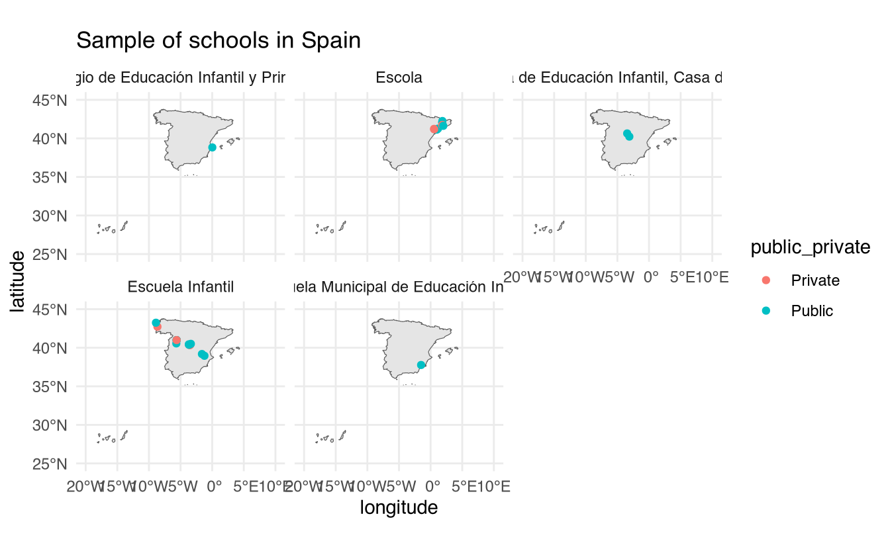
As you might have seen from this chapter, webscraping is all about being creative. Finding somewhat unique tags that identify the data you’re looking for is not a precise science and requires tricks using regular expressions, string manipulations and handy XPath knowledge. In the exercises below you’ll need to be creative and find clever ways to extract additional data from the schools data.
6.5 Exercises
- On the left menu click where it says “Enseñanzas” (teachings in english). I want you to extract the unique modality of the school. This is whether the school has remote or in-presence classes. You can find the information here:
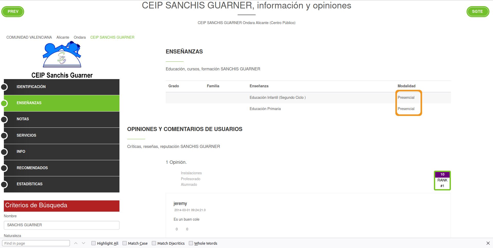
For this school, all classes are in-presence or “presencial” in Spanish. You result should be a data frame of one column with 27 rows (one for each school). You result should be like this but for the 27 schools:
mode_school
1 Presencial
2 Presencial
3 Presencial
4 Presencial
5 Presencial
6 PresencialHint: it might be handy to pick tags in XPath using indices such as //tag[2] to get the specific index you want.
- On the left menu click where it says “Servicios” (services in English). I want you to extract all services that each school provides. In this example, the school provides “Comedor escolar” (school cafeteria) and “Transporte” (transportation):
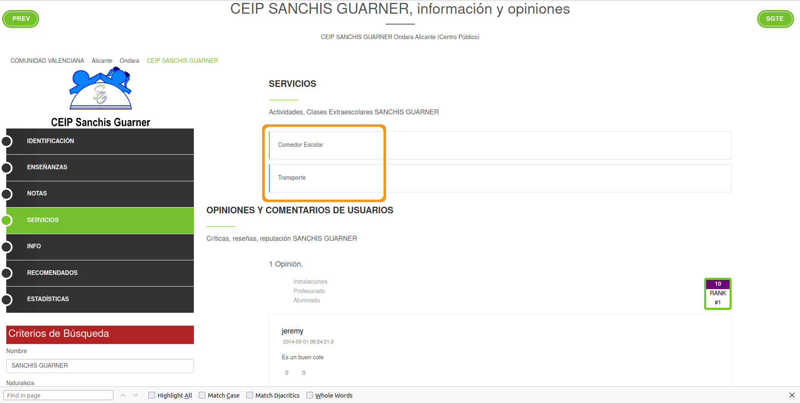
You result should look something like this but for 27 schools:
amenities
11 <NA>
12 <NA>
13 Comedor Escolar, Transporte
14 Comedor
15 Comedor
16 <NA>- From the main school page, extract the address of the school. The information is here:
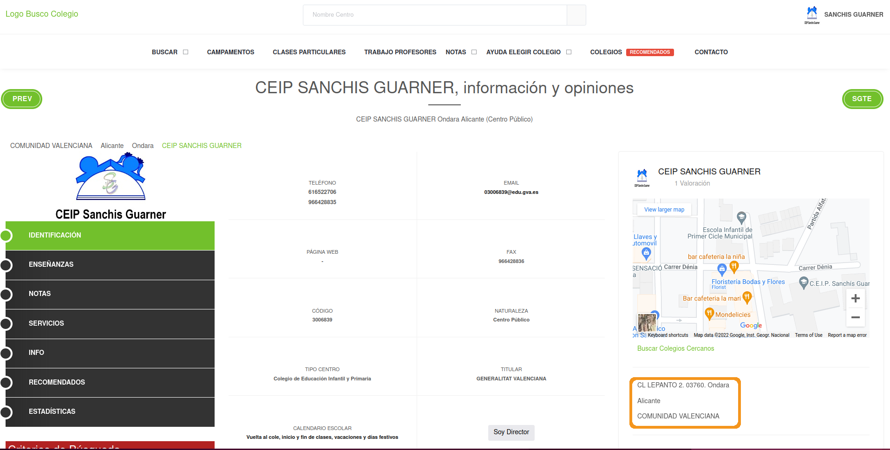
Your result should be like this but for 27 schools:
addresses
1 CALZADA S/N-IRIA. 15917. Puente-Cesures, Padrón, A Coruña, GALICIA
2 TRABE. 15110. A Trabe, Ponteceso, A Coruña, GALICIA
3 CL. MEJORADA, S/N. 02690. Alpera, Albacete, CASTILLA-LA MANCHA
4 TR. CANTARRANAS, 3 B. 02610. El Bonillo, Bonillo (El), Albacete, CASTILLA-LA MANCHA
5 C/ de la Fuente de Piedra 10. 28018. Madrid, MADRID
6 C/ Mayor 29. 28596. Brea de Tajo, Madrid, MADRID- On the main page of the website, if you scroll down you’ll find a part of the website like this:
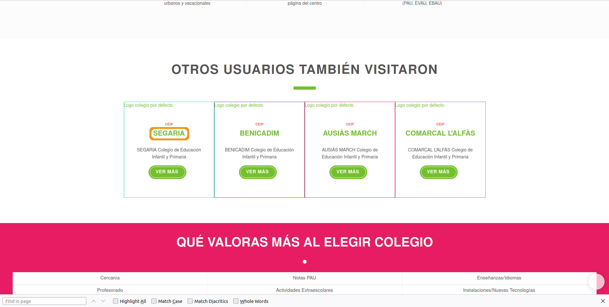
These are schools that other people visited when visiting this specific school. If you were doing some type of network analysis, you might want to analyze whether people visiting certain type of schools are interested in schools with certain properties. For that, you might need to actually go to the other school’s websites and extract information. Right now we won’t do that, but your task is to extract the other school’s links in case you wanted to automatically scrape these schools as well. For each school, you’ll have four links to other similar schools. Your result should be like this but for 27 schools:
# A tibble: 27 × 4
school_one school_two school_three school_four
<chr> <chr> <chr> <chr>
1 /Colegio/detalles-colegio.action?id=1500… /Colegio/… /Colegio/de… /Colegio/d…
2 /Colegio/detalles-colegio.action?id=1502… /Colegio/… /Colegio/de… /Colegio/d…
3 /Colegio/detalles-colegio.action?id=2009… /Colegio/… /Colegio/de… /Colegio/d…
4 /Colegio/detalles-colegio.action?id=2009… /Colegio/… /Colegio/de… /Colegio/d…
5 /Colegio/detalles-colegio.action?id=2804… /Colegio/… /Colegio/de… /Colegio/d…
6 /Colegio/detalles-colegio.action?id=2804… /Colegio/… /Colegio/de… /Colegio/d…
7 /Colegio/detalles-colegio.action?id=2806… /Colegio/… /Colegio/de… /Colegio/d…
8 /Colegio/detalles-colegio.action?id=2805… /Colegio/… /Colegio/de… /Colegio/d…
9 /Colegio/detalles-colegio.action?id=2806… /Colegio/… /Colegio/de… /Colegio/d…
10 /Colegio/detalles-colegio.action?id=2805… /Colegio/… /Colegio/de… /Colegio/d…
# ℹ 17 more rowsHint: you’ll want to look for the hyperlink that leads to each school in the href tag.
- Combine
all_schoolswith the previous exercises into a final data frame for each school. Final result should like this but for 27 schools:
# A tibble: 27 × 11
latitude longitude public_private type_school mode_school amenities addresses
<dbl> <dbl> <chr> <chr> <chr> <chr> <chr>
1 42.7 -8.66 Private Escuela In… Presencial <NA> CALZADA …
2 43.2 -8.89 Public Escuela In… Presencial <NA> TRABE. 1…
3 39.0 -1.23 Public Escuela In… Presencial <NA> CL. MEJO…
4 39.2 -1.62 Public Escuela In… Presencial <NA> TR. CANT…
5 40.4 -3.64 Private Escuela In… Presencial <NA> C/ de la…
6 40.2 -3.11 Public Escuela de… Presencial <NA> C/ Mayor…
7 40.4 -3.70 Public Escuela In… Presencial Horario … JOSÉ ABA…
8 40.3 -3.52 Private Escuela In… Presencial <NA> C/ Feder…
9 40.5 -3.37 Public Escuela In… Presencial <NA> C/ José …
10 40.6 -3.45 Public Escuela de… Presencial <NA> C/ Subid…
# ℹ 17 more rows
# ℹ 4 more variables: school_one <chr>, school_two <chr>, school_three <chr>,
# school_four <chr>